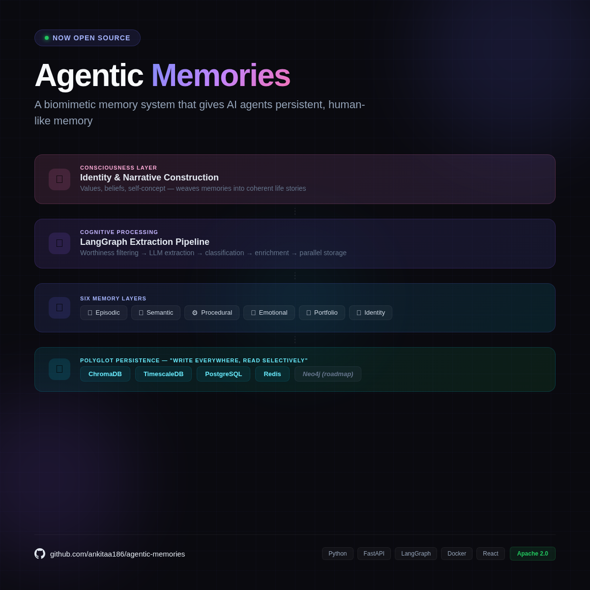
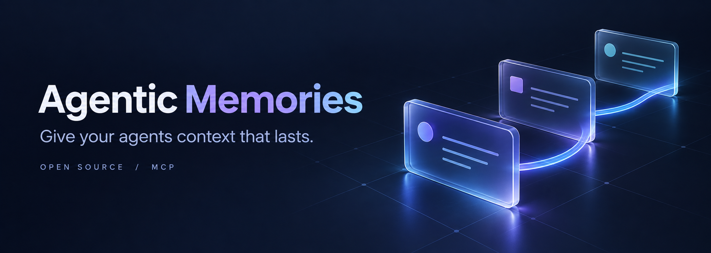
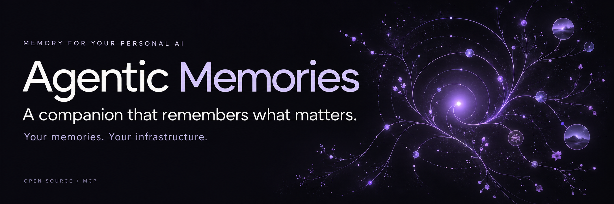
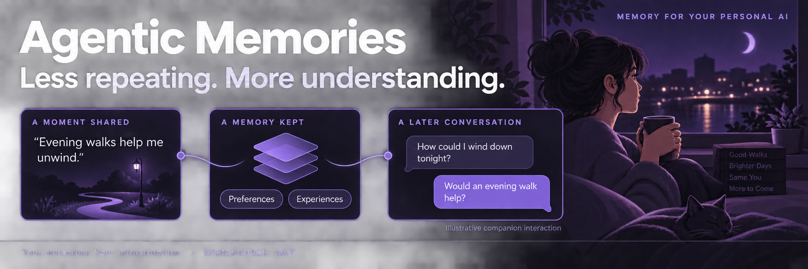
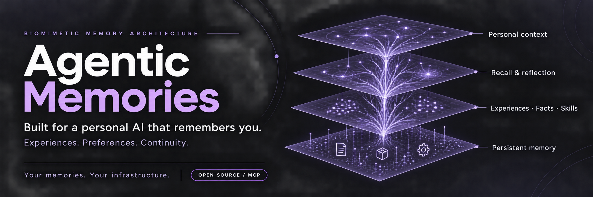

Before / original launch graphic

Keep: biomimetic identity, layered architecture, personal continuity.
Improve: dense copy, missing icon glyphs, square format, unclear distinction between vision and implementation.
Three finished banner options. Every option uses a dark background, white typography and shades of purple. The focus is personal companionship, with biomimetic memory and control over stored memories.

Keep: biomimetic identity, layered architecture, personal continuity.
Improve: dense copy, missing icon glyphs, square format, unclear distinction between vision and implementation.

Keep: wide format and clear typography.
Improve: generic AI imagery, weak personal-companion story, architecture lost from the visual.

The warmest, simplest brand introduction. Personal and memorable, with the architecture left for the next section. More abstract than the other options.

The clearest explanation of the benefit: less repeating, more useful context. A relatable companion scenario. Denser at phone width; the conversation is labeled illustrative, not a recorded product response.

The strongest match to the original identity: layered biomimetic architecture, personal companionship, and a clear storage-ownership message. This is a conceptual illustration; the technical architecture diagram documents actual components.
{kind=link}
{kind=link}
{kind=link}